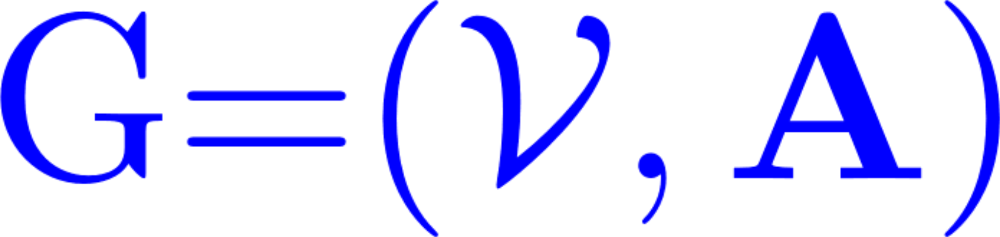
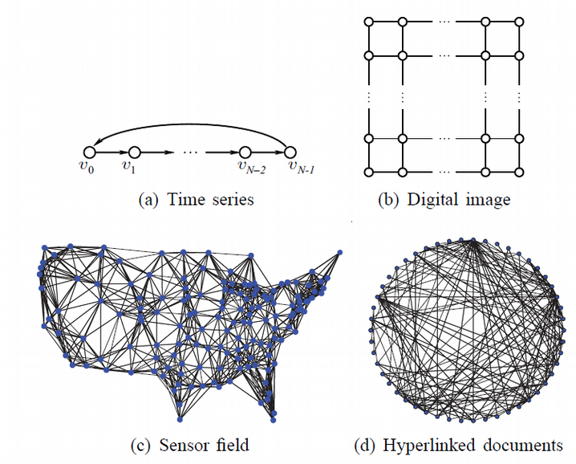
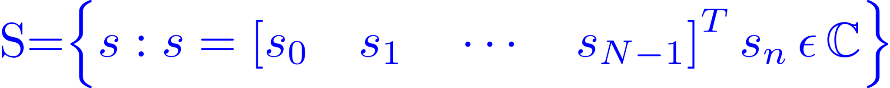
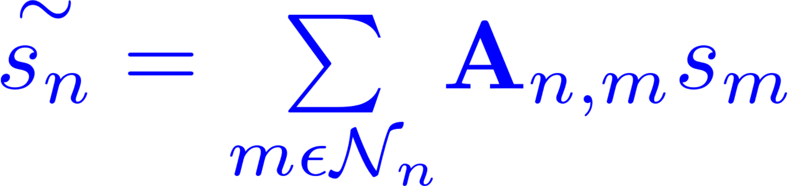
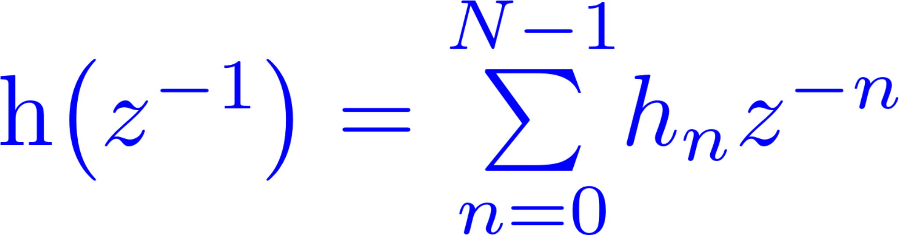
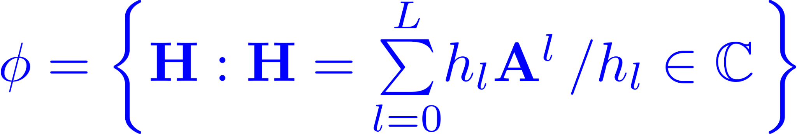
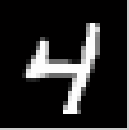
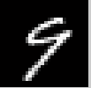
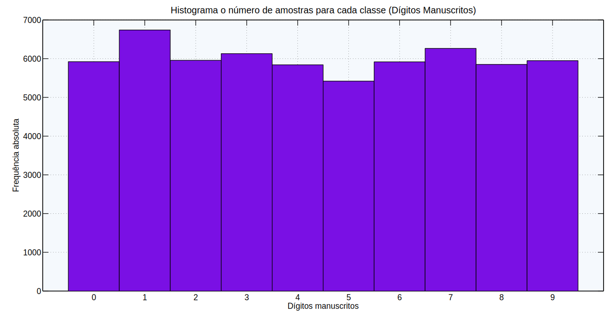

Universidade Federal do Ceará
Campus Sobral
Processamento Digital de Sinais
Aplicado em Grafos:
Classificação de Dígitos Manuscritos
Ken E. Ccorahua
Objetivos
- Embasamento teórico fundamental de PDS em grafos.
- Preparar as imagens.
- Pre-classificar imagens utilizando KNN.
- Implementar um filtro em grafos.
- Classificar dígitos manuscritos.
Grafos


PDS em Grafos
Definição matemática de um sinal em grafos.
Deslocamento em grafos (Shift)
Definição matemática de deslocamento de um sinal.
Deslocamento em grafos (Shift)
>> a = gallery('circul',[0;1;0;0;0;0;0]);
0 1 0 0 0 0 0
0 0 1 0 0 0 0
0 0 0 1 0 0 0
0 0 0 0 1 0 0
0 0 0 0 0 1 0
0 0 0 0 0 0 1
1 0 0 0 0 0 0
>> s = [1 2 3 4 5 6 7]'
s =
1
2
3
4
5
6
7
>> s = a * s
s =
2
3
4
5
6
7
1
>> s = a * s
s =
3
4
5
6
7
1
2
Filtros em grafos
Transformada Z de um LSI
Definição de um filtro em grafos
Banco de dados MNIST
 
Banco de dados MNIST

Banco de dados MNIST
Fundamentação teórica

Metodologia CRISP-DM

Atividades da aplicação